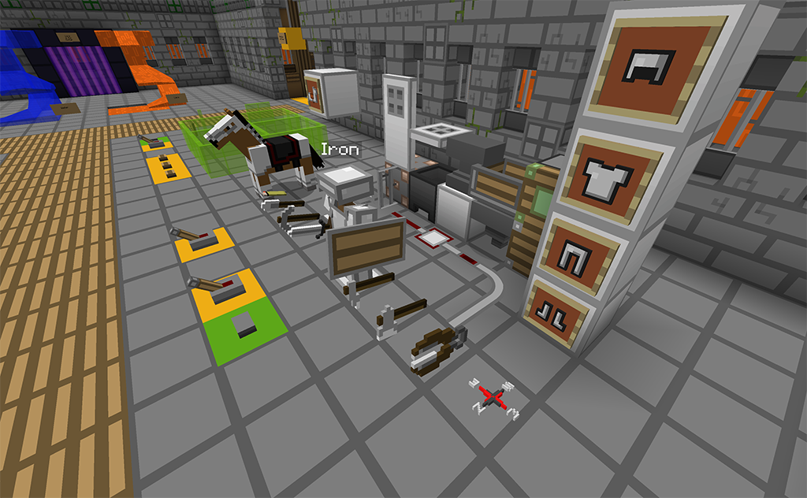

RestWorld
A Compact, Rich Resource Pack Testing World
Version 1.15.2As Minecraft has evolved, the number of blocks has become larger and larger. There used to be a few downloadable test worlds for looking at a pack, but over time these are much more unweildly. It leaves a test world with a choice between completeness, compactness, and being able to see things with enough room.
RestWorld squares this circle by looping. Blocks and mobs that are similar take up a small space, and withing that space, the variations are looped. For example, all the ores take up one block, which changes from coal ore to iron ore to gold ore and so on. Each is shown for a couple seconds (you can adjust the timing). And you can stop the looping at any time to focus on a specific ore texture. This means you have all blocks and mobs within a space that you can traverse. You can also compare how related blocks look. For example, if you want ores to look the same, you will notice errors much more easily when you can see the offending ore switched to from another one.
A few examples may help:


How to Use RestWorld
You start in the middle, where you can get a control book that allows you to stop and start the looping, as well as speeding it up or slowing it down. You can do these with buttons in the middle, but the book is a control you can carry with you.
Rooms branch off in four directions. When you enter a room, its stuff starts looping (unless you've stopped the clock).
You'll find controls scattered around.
- A button on red or green concrete stops or starts the clock, and the color switches too.
- A switch on colored concrete toggles some value in a neighboring loop. For example, with the horses, there is a switch that toggles whether or not there is a saddle on the horses.
- Buttons on other colored concrete change modes in a neighboring loop. For instance, with villagers one button changes to/from zombie villagers, another changes whether the loop through biomes (with all professions for a single biome), vs. looping through professions (with villagers with the same profession from each biome).
- Other buttons are labelled. And if not, just try it out!
- In the effects room, touch the signs to switch which particles are being shown.
- In the control book, you can open the book and then click on things that are green.

Places in RestWorld
In addtion to the main area, there are two other destinations in RestWorld:
- A place to take a representative snapshot of your texture pack.
- An arena where you can try out live mobs. You can summon them with
commands, such as "
/summon ~ ~ ~ cow".
 Download RestWorld Download RestWorld
|
Restworld was built on a lot of commands and functions. In case you're interested, here are some details.
- Version numbering will be the same as the Minecraft version they are built for (e.g., version 1.15.2 is ready for Minecraft 1.15.2).
- Each room only loops while you're in it (or not too far above it), to keep overhead down.
- RestWorld is built on a lot of functions driven from command blocks, using armor stands to give a location that is used to base the actions. This means that it is somewhat easy to relocate a loop by moving where its armor stand is.
- There is a big reset button outside the main area, but your best bet is to keep a copy of the downloaded world around.
I started this world because I was working on my Clarity resourepack family. Check it out!  .
Future plans
- Representative biome regions.
- Examples of each structure.
Credits
Authors: BlueMeanial, with JUMBOshrimp277 aiding and abetting, doing most of the aesthetics and advising on the loops.
 RestWorld Resource Pack Testing World by claritypack.com
RestWorld Resource Pack Testing World by claritypack.com
is licensed under a Creative
Commons Attribution 4.0 International License.
© 2017-2020 by Ken Arnold. Based on a work at https://github.com/kcrca/restworld.